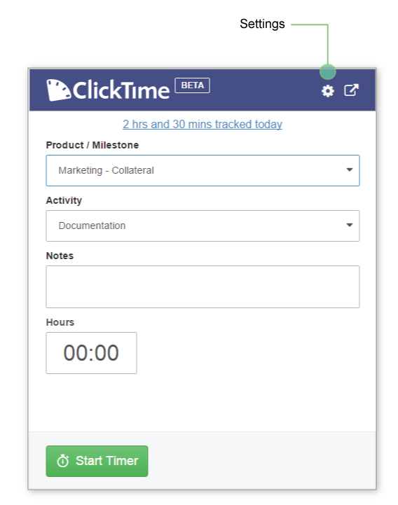

You can add ClickTime for Chrome to your Chrome browser here. After adding the extension, click the ClickTime icon in your Chrome extension tray and log in using your ClickTime credentials.

In ClickTime for Chrome, Client and Job are combined in one dropdown, allowing you to quickly make your selections. Your task can be chosen in the next dropdown.

With 'Duration' selected on the Settings page, you can type in the total time spent on a task. To enter a time duration, click into the hours box and type in your total time. Time in this box will be rounded via your company's settings and converted to hh:mm format.

After typing in your time, press the Save button to save your time entry to your ClickTime account.

You will see a successful save message upon saving your time entry. If you made a mistake with your time entry, you can click on the 'Edit this entry' link to the right of the success message to be taken to Day View to make adjustments to the time entry.

With Start and End Times selected on the Settings page, you can type in Start and End Times. To put in Start and End Times, click into the Start Time input box and type in your start time. Then click into the End Time box and type in your end time.

After typing in your Start and End Times, press the Save button to record to your ClickTime account. Your entry will be rounded via you company's settings.
The Stopwatch can be used with either Duration or Start and End Times selected on the Settings page.
To start a Stopwatch, click the Start Timer button. The Stopwatch will run until you click the Stop & Save button.
You will see your running Stopwatch recorded time in the bottom-right corner of the extension. If your entry method is set to Start and End Times, the Start Time field will be set as the current time. The End Time field will be filled with the current time, and will continue to update as time progresses.

The Stopwatch will continue to run even if you close the extension or close Chrome. You will see a red badge appear over the extension icon in Chrome's extension tray. This badge displays the running Stopwatch recorded time in h:mm format. It will read '0:00' until the first minute has elapsed.

Upon clicking the Stop & Save button, your entry will be saved with the current time set as End Time. Your entry will be rounded via your company's settings and saved to your ClickTime account.

Available time entry methods are determined via your ClickTime employee settings.
To modify or delete any time entries made using ClickTime for Chrome, click your daily hour total towards the top of the extension to be taken to Day View in your ClickTime account.

To 'pop-out' ClickTime for Chrome into its own window, press the arrow button in the top-right corner.

The Settings page can be accessed by clicking the gear icon in the top right of the extension. From here you can refresh your client, job, and task lists, toggle notifications on/off, and log out of the extension.
Depending on your employee settings set by your company's ClickTime administrator, you might be able to change your default entry method. Toggle between Duration and Start and End Times as your defualt entry method on the Settings page.

If you've added a new Client, Job, or Task in the ClickTime Web application but it is not yet showing up in the extension's corresponding dropdown menu, click the 'Refresh my lists' link to update your Client, Job, and Task lists.

ClickTime for Chrome will send you reminders to track your time every 4 hours. If you'd like to disable this feature, uncheck the 'Remind me to track my time' box. You can always re-enable this feature later.

To return to the Time Entry page, click the Back to Timer button in the top-right corner of the Settings page.

To log out of ClickTime for Chrome, click the Log Out button in the bottom-left corner of the Settings page.